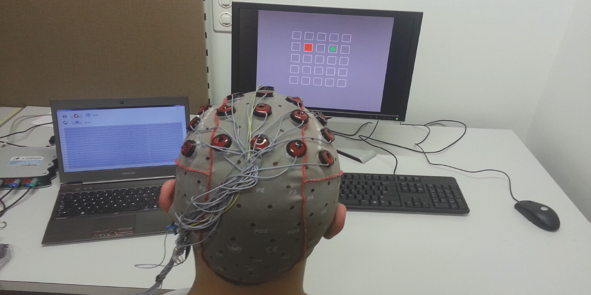

Can a machine learn from humans without knowing the meaning our communicative signals?
This is the question I studied during my PhD at INRIA, France's leading research institute in AI, globally recognised for pioneering advancements in machine learning and ranked among the top institutions driving AI innovation in Europe. I work within the Flowers Lab under the supervision of Manuel Lopes and Pierre-Yves Oudeyer, a lab renowned for breakthroughs in curiosity-driven learning and human-robot interaction.
The problem resemble a chicken-and-egg scenario: to learn the task you need to know the meaning of the instructions (via interactive learning methods), and to learn the meaning of the instructions you need to know the task (via supervised learning methods). However, a common assumption is made on both side: we always assume the user providing the instructions or labels is acting consistently with respect to the task and to its own signal-to-meaning mapping. In short, the user is not acting randomly but is trying to guide the machine towards one goal and using the same signal to mean the same things. The user is consistent.
Hence, by measuring the consistency of the user signal-to-meaning mapping with respect to different tasks, we were able to recover both the task and the signal-to-meaning mapping, solving the chicken-and-egg problem without the need for an explicit calibration phase. My contribution is a variety of method to measure consistency of an interaction, as well as a planning algorithm based on the uncertainty on that measure. I also proposed method to scale this work to continuous state domains, infinite number of tasks, and multiple interaction frame hypothesis. We further applied these methods to a brain-computer interfaces with real subjects in collaboration with Iñaki Itturate and Luis Montesano.
This body of work led to several publications, including in AAAI and UAI conferences, both among the most prestigious international AI venues, and in PlosOne, a leading open-access journal recognized for its multidisciplinary scope. My PhD thesis received the "Prix Le Monde de la Recherche Universitaire" awared by Fields Medalist Cédric Villani.
This work illustrates my creativity and depth of expertise in AI, my drive to apply theoretical tools across disciplines, as well as my ability to understand and contribute to cutting edge research in a fast-moving technical field.